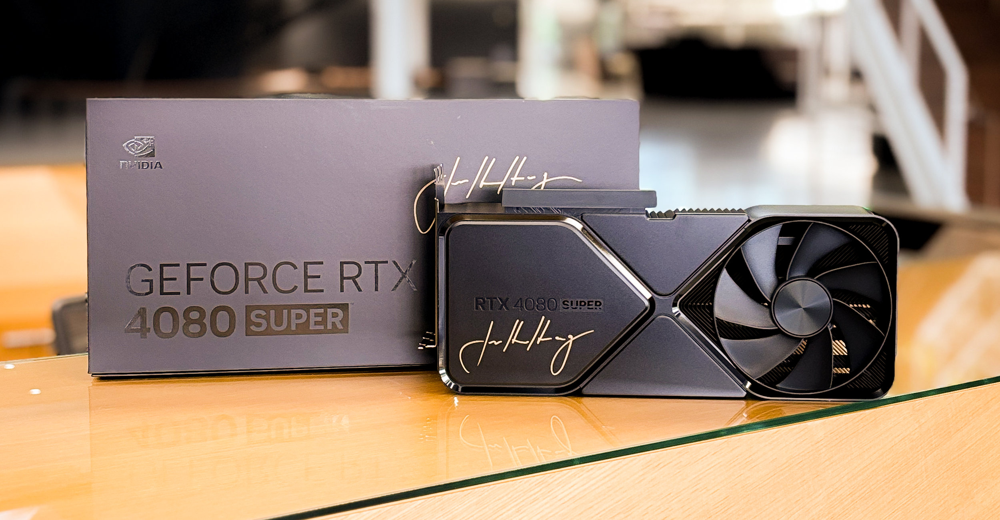
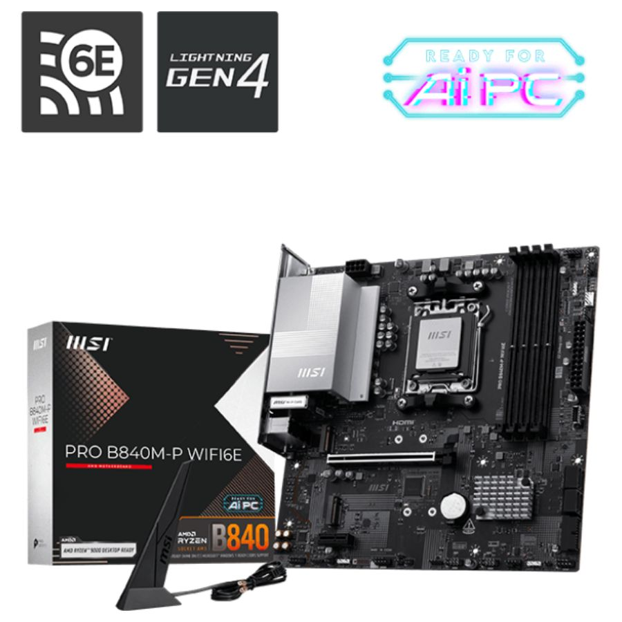

1. Placa de video (GPU)
Si la pensamos para gaming vamos a priorizar la GPU o Tarjeta Gráfica. Esto es porque va a ser lo que defina la compatibilidad del resto de los componentes.

En este caso vamos a agarrar una RTX 4080 Super.
2. Placa madre (Motherboard)
Como elegimos una RTX 4080 Super, tenemos que buscar una motherboard con conexión PCI-E 4.0, que es el conector de la placa de video.

Vamos a elegir la MSI PRO B840M-P WIFI6.
3. Procesador (CPU)
La motherboard que elegimos usa socket AM5, así que necesitamos un procesador que sea compatible con ese socket.

Vamos a elegir un AMD Ryzen 7 7800X3D, muy usado para gaming.
4. Memoria RAM
Para gaming lo ideal es tener como mínimo 16GB, aunque 32GB te da más margen.
Recomendado: 2x16GB DDR5 6000MHz.
5. Almacenamiento
Un SSD NVMe hace que el sistema y los juegos carguen mucho más rápido que un disco rígido tradicional.
Recomendado: SSD NVMe de 1TB.